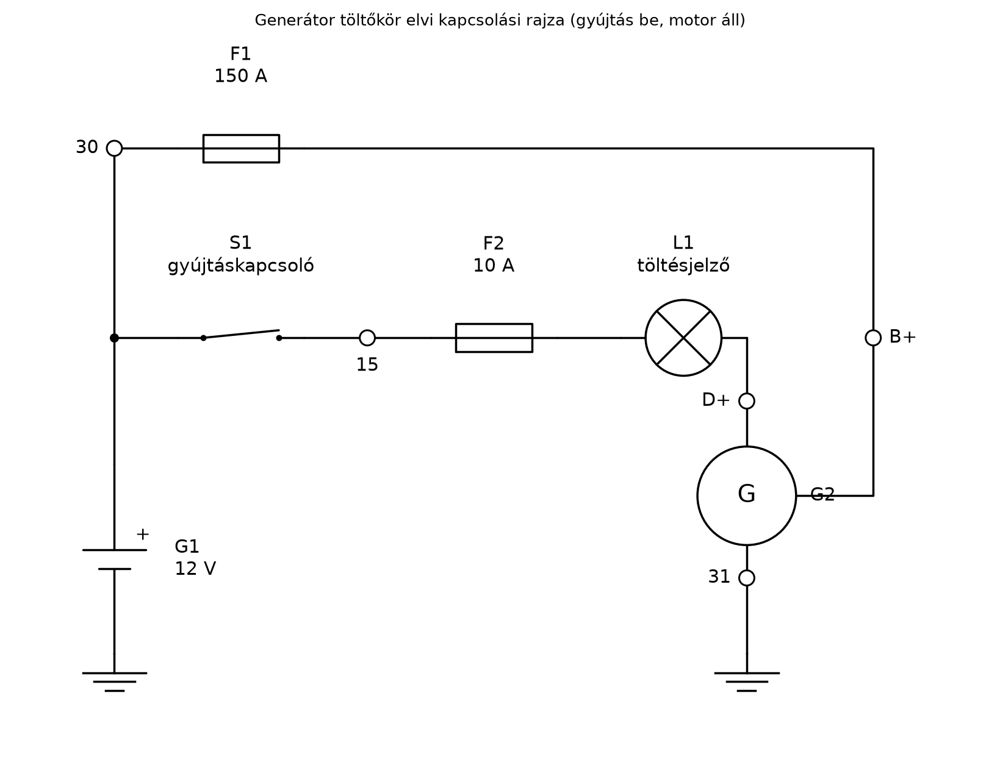
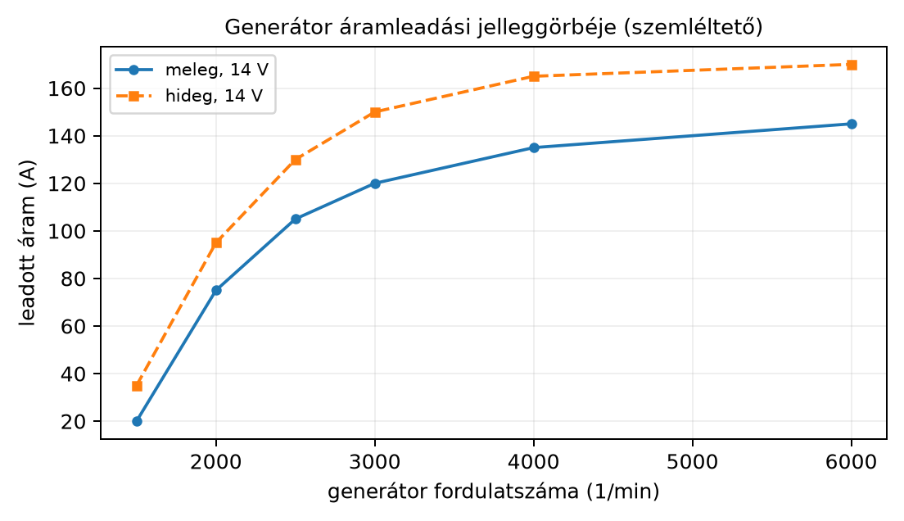

A műhelyben az egyik leggyakoribb panasz: „a töltésjelző világít, az autó reggel nem indul, vagy menet közben lemerül az akkumulátor.” Ilyenkor a diagnosztika előbb-utóbb eljut a generátorhoz (alternator; műhelyi szleng: töltő), amely a motor mechanikai energiáját villamos energiává alakítja, és a fedélzeti hálózatot névleges feszültségen tartja. Ebben az alfejezetben megismerjük a gépjárművekben szinte kizárólagosan használt háromfázisú karmos pólusú generátort, a diódahidat, az előgerjesztést és a szíjhajtást, valamint a generátor áramleadási képességét leíró jelleggörbét. A korábbi alfejezetekben tanult háromfázisú rendszer (A transzformátor és a háromfázisú rendszer) és a diódás egyenirányítás (Félvezetők, diódák, Zener-dióda és egyenirányítók) itt kapcsolódik össze a járművön.
Nyissuk fel a motortérben a generátort: a motor elején, a szíjhajtáson keresztül hajtott, többé-kevésbé hengeres alumínium házat látunk, amelynek egyik végén szíjtárcsa, másik végén műanyag védőház alatt a diódahíd és a feszültségszabályozó helyezkedik el. A generátor belsejében a forgórész (rotor) egy tengelyen ül, rajta gerjesztőtekercs, amelyet két karmos póluskerék fog közre. A külső állórész (stator) vasmagjának hornyaiban három fázistekercs fut. A forgórész pólusai a forgás során váltakozó mágneses mezőt hoznak létre, így az állórész tekercseiben három, egymástól 120°-kal eltolt feszültség indukálódik. A háromfázisú váltakozó feszültséget a diódahíd egyenirányítja, és a B+ kimeneten keresztül a fedélzeti hálózatra adja. A házon találjuk a B+ (akkumulátor plusz), D+ (gerjesztés/töltésjelző) és a testkapcsolatot, valamint a feszültségszabályozó csatlakozóját.
Definíció. A gépjármű-generátor olyan villamos gép, amely a belső égésű motor mechanikai energiáját egyenirányított, szabályozott feszültségű egyenárammá alakítja, ellátja a jármű fogyasztóit, és tölti az indítóakkumulátort. A korszerű járművekben ez háromfázisú szinkrongép, amelynek kimenetén teljesítménydiódás egyenirányító híd van.
Definíció. A karmos pólusú forgórész (claw-pole rotor) két, egymásba illesztett, karmos kiképzésű póluskerékből áll, amelyek között a gerjesztőtekercs helyezkedik el. Az egyik póluskerék az északi, a másik a déli pólusokat alkotja; a karmok száma a generátor pólusszáma, amely több pólusú (pl. 12 pólusú) forgómezőt ad alacsony fordulatszámon is.
Definíció. A diódahíd (rectifier) hat vagy több teljesítménydiódából álló, hídkapcsolású egyenirányító, amely a háromfázisú váltakozó feszültséget lüktető egyenfeszültséggé alakítja. A pozitív oldali diódák a B+ kimenetre, a negatív oldaliak a testre vezetnek.
Összefüggés. A háromfázisú híd ideális, terheletlen egyenirányított feszültsége közelítőleg
ahol a fázisfeszültségek vonali (effektív) értéke. A gépjármű-generátorban a szabályozó ezt a nyers egyenfeszültséget tartja a névleges hálózati feszültség körül, jellemzően 14,0–14,8 V között (12 V-os hálózat esetén). A pontos érték gyártói és üzemállapot-függő (ellenőrizendő: a gyártói javítási adat).
Szabály. A generátor feszültséget kelt, de a leadott áramot a fogyasztók igénye és a szabályozó gerjesztése határozza meg. Ha a hálózati feszültség csökken, a szabályozó növeli a gerjesztőáramot, így a generátor nagyobb áramot ad le, amíg a feszültség vissza nem áll.
Előírás. A gépjármű-generátor kapocsjelölése
Magyarországon a DIN 72552 szerinti gyakorlatot követi: a fő kimenet
B+, a gerjesztés/töltésjelző D+, a test
31. A jármű villamos hálózatának elektromágneses
összeférhetőségére az ENSZ-EGB 10. előírása vonatkozik
(ellenőrizendő: hatályos ECE R10 és az EU
EMC-jogszabály). A gyártói kapcsolási rajz a mérvadó.
A karmos pólusú generátor fő részei:
A robbantott ábra a tengely mentén mutatja a fenti részeket: a szabadonfutó szíjtárcsát, a ventilátort, a két csapágypajzsot, a karmos póluskerekes forgórészt csúszógyűrűkkel, az állórészt, a diódahidat, a szabályozót szénkefetartóval és a B+, illetve D+/DFM/LIN csatlakozót. Az interaktív változatban az alkatrészre mutatva a tipikus hibája is megjelenik.
Működés. Amikor a vezető ráadja a gyújtást, az akkumulátorról a gyújtáskapcsolón és a töltésjelző lámpán keresztül kis áram folyik a D+ kapocsra, majd a gerjesztőtekercsbe. Ez az előgerjesztés elegendő mágneses mezőt hoz létre ahhoz, hogy a motor beindulása után a forgórész mágneses mezője az állórész tekercseiben feszültséget indukáljon. Amint a generátor feszültsége eléri a hálózati feszültséget, a töltésjelző lámpa két oldala azonos potenciálra kerül, a lámpa kialszik. Innentől a generátor saját magát táplálja, a gerjesztőáramot a gerjesztődiódákról és a szabályozóról kapja.
A háromfázisú feszültséget a hat dióda egyenirányítja; a hídkapcsolás mindkét félperiódust hasznosítja, így a kimenő feszültség hullámossága kicsi. A szabályozó a motor fordulatszámától és a terheléstől függően gyorsan változtatja a gerjesztőáramot, ezért a generátor széles fordulatszám-tartományban állandó feszültséget tart.
A következő kapcsolási rajz a generátor töltőkört szemlélteti gyújtás bekapcsolt, motor álló állapotban. A töltésjelző lámpán át folyó előgerjesztő áram útját a D+ kapocs felé jól láthatjuk.

A rajzon: G1 az akkumulátor (kapcsai a 30-as plusz és a 31-es test), F1 a B+ főkör főbiztosítója, S1 a gyújtáskapcsoló (kimenete a 15-ös kapocs), F2 a töltésjelző ág saját biztosítója, L1 a töltésjelző lámpa, G2 a generátor (benne a diódahíd, a gerjesztődiódák és a szabályozó), B+ a fő kimenet, D+ a gerjesztő/lámpa kapocs, 31 a test. A gyújtás bekapcsolásakor az előgerjesztő áram a gyújtáskapcsolón, az F2 biztosítón és a lámpán át a D+ kapocsra, onnan a generátoron belül a szabályozón és a gerjesztőtekercsen át a testre folyik. A beindult motornál a generátor feszültsége a B+ és a D+ oldalon is megemelkedik, a lámpa kialszik, a főáram a B+ kimenetről az F1 főbiztosítón át az akkumulátor és a fogyasztók felé folyik.
A generátor legfontosabb paraméterei:
| Jellemző | Szokásos érték 12 V-os hálózaton | Megjegyzés |
|---|---|---|
| Névleges feszültség | 14,0–14,8 V | Szabályozott kimenet, hőmérsékletfüggő lehet |
| Maximális áram (hideg) | 80–250 A | Típusfüggő, a gyártói adat |
| Maximális áram (meleg, állandó) | a hideg értéknél 10–30%-kal kisebb | A tekercsellenállás és a hűtés korlátozza |
| Szíjáttétel | 1:2,0 – 1:3,0 | A generátor fordulatszáma a motorfordulat többszöröse |
| Pólusszám | 12–16 pólus | Alacsony alapjáraton is elegendő feszültség |
Az értékek tanulási példák (ellenőrizendő: gyártói adat / típus szerinti érték).
Összefüggés. A generátor fordulatszáma a szíjtárcsa-áttételből:
ahol a motor fordulatszáma (1/min), a főtengely-szíjtárcsa és a generátortárcsa átmérőjének aránya. A generátor feszültségének frekvenciája:
ahol a póluspárok száma. Egy 12 pólusú, póluspárú generátornál 1/min alapjárati generátorfordulat esetén Hz; 1/min-nél Hz.
A generátor áramleadási képességét az áram–fordulatszám jelleggörbe mutatja. Alacsony fordulaton a gerjesztés és az indukált feszültség kisebb, ezért a leadható áram korlátozott. A fordulatszám növelésével a görbe meredeken emelkedik, majd a telítés és a hőkorlát miatt ellaposodik. A hideg generátor nagyobb áramot tud adni, mert a tekercsellenállás kisebb, de tartós terhelésnél a hőmérséklet növekedése csökkenti a leadható áramot.

A diagramról leolvashatjuk: ha a generátor fordulatszáma 2500 1/min, a meleg generátor körülbelül 105 A-t képes leadni, a hideg pedig körülbelül 130 A-t. Az áramleadási képesség a fogyasztók összegzésénél fontos: ha a jármű tartós fogyasztása e fölé nő, a hiányzó áramot az akkumulátor adja, ami fokozatos lemerüléshez vezet.
A generátorban a veszteségek (tekercs-, vas- és diódaveszteség) hővé alakulnak, ezért a hűtés létfontosságú. A hagyományos generátorok a tengelyen ülő, bordázott ventilátorral szívják át a levegőt a házon. A nagyobb teljesítményű, beépítettségük miatt rosszul hűtött generátoroknál a motortól származó hűtőfolyadék áramlik a generátorházban kialakított járatokon. A vízhűtéses generátor halkabb, és tartósan nagyobb áramot tud leadni.
A generátor hajtása bordás ékszíjjal (poly-V szíj) történik. A szíj feszessége és állapota meghatározó: a laza, kopott, olajos szíj megcsúszik, a generátor fordulatszáma csökken, a töltés bizonytalanná válik. A korszerű generátorokon szabadonfutó szíjtárcsát alkalmaznak: a tárcsa a generátor tengelyére egyirányú szabadonfutón keresztül kapcsolódik. Ez lehetővé teszi, hogy a generátor a motor fordulatszám-csökkenésekor a lendülete miatt tovább forogjon, míg a szíj lassabban jár. A szabadonfutó csökkenti a szíj lengését, zaját és a feszítőgörgő terhelését. Ha a szabadonfutó berágódik, a generátor rángatja a szíjat; ha megcsúszik, a generátor nem forog egyenletesen.
Figyelem. Járó motor mellett a generátor forgó szíjtárcsája, ventilátora és a forró ház komoly sérülést okozhat. A B+ csatlakozó nagy keresztmetszetű, feszültség alatt álló kábele; a szerszám vagy ékszer rövidzárlatot, szikrát, tüzet okozhat. Mérés és szerelés előtt a gyújtást le kell állítani, az akkumulátort a gyártói előírás szerint le kell kötni (először a test sarut), és meg kell várni, amíg a generátor lehűl.
A hagyományos 12 V-os, 80–150 A-es generátor mellett a következő változatokkal találkozhatunk:
1. példa – Szíjáttétel és generátorfordulat.
Adott: a motor alapjárati fordulatszáma
1/min; a főtárcsa átmérője
mm, a generátortárcsa átmérője
mm. Keresett: a generátor fordulatszáma.
Az áttétel
.
1/min.
Ellenőrzés: alapjáraton a generátor már eléri a chart szerinti hasznos
tartományt. ∎
2. példa – Generátor teljesítménye és mechanikai
igénye.
Adott: a generátor leadott feszültsége
V, áram
A; hatásfoka
.
Keresett: a leadott villamos teljesítmény és a szükséges mechanikai
teljesítmény.
W, tehát
kW.
W, azaz
kW.
Ellenőrzés: ez a motor névleges teljesítményének 3–8%-a, ami reális.
∎
3. példa – Jelleggörbe leolvasása.
Adott: a fenti chart, a generátor fordulatszáma
1/min, meleg állapotban.
Keresett: a leadható áram.
A 3000 1/min-hez tartozó meleg görbeérték:
A. Ha a jármű fogyasztói tartósan 130 A-t igényelnek, a 10 A hiány az
akkumulátorból folyik, ami idővel lemerülést okoz. ∎
A generátor ellenőrzésekor az alábbi méréseket és vizsgálatokat végezzük:
Egy autó a műhelybe érkezik azzal a panasszal, hogy télen, sok fogyasztóval (hátsó ablakfűtés, fényszóró, fűtőventilátor) néha lemerül, a fényszóró kissé halványul. A diagnosztikai műszerrel a fedélzeti feszültséget alapjáraton nagy terheléssel mérjük: 12,6 V, a kívánt 14 V helyett. A generátor B+ kimenetén is 12,9 V-ot mérünk, tehát a feszültségesés a kábelen nem jelentős. A szíj feszes, de a generátor fordulatszáma megfelelő. A feszültségszabályozó csatlakozóján a gerjesztő jelet oszcilloszkóppal ellenőrizzük: a kitöltési tényező 100% közelében van, tehát a szabályozó maximális gerjesztést kér. A diódavizsgálat az egyik pozitív diódát záróirányban vezetőnek mutatja. A diódahíd hibás: a generátor nem tudja a terheléshez szükséges áramot előállítani. A javítás a diódahíd vagy a teljes generátor cseréje a gyártói előírás szerint. A csere után a feszültség nagy terheléssel is 14,2 V, a panasz megszűnt. Tanulság: a töltésjelző lámpa nem mindig mutatja a gyenge töltést, mert a rendszer feszültsége csak terhelés alatt esik le; ezért a töltőkör ellenőrzését mindig terhelés alatt kell végezni.
A válaszok a Megoldások elején.
1. feladat (A)
Fogalmazd meg, mi a gépjármű-generátor feladata, és miért háromfázisú
kivitelű?
2. feladat (A)
Adott: a motor fordulatszáma 2000 1/min, a főtárcsa átmérője 160 mm, a
generátortárcsa átmérője 65 mm. Számítsd ki a generátor
fordulatszámát!
3. feladat (B)
Adott: a generátor 14,3 V feszültségen 110 A-t ad le, hatásfoka 0,60.
Mennyi a leadott villamos teljesítmény, és mekkora mechanikai
teljesítményt igényel a motorról?
4. feladat (B)
A diagram jelleggörbéje alapján: mekkora a leadható áram 2500 1/min-nél
hideg és meleg állapotban? Mennyi marad tartalék, ha a jármű fogyasztói
90 A-t igényelnek?
5. feladat (C)
Egy járműbe 120 A névleges generátor van beépítve. A tartós fogyasztók:
fényszórók 15 A, fűtőventilátor 12 A, hátsó ablakfűtés 25 A, ülésfűtés
10 A, rádió és világítás 8 A, motorirányítás 10 A. Alapjáraton a
generátor 2000 1/min-en 75 A-t tud leadni (meleg). Mi történik, ha
minden fogyasztó be van kapcsolva? Számítsd ki a hiányt, és javasolj
megoldást.
6. feladat (D)
Műhelyi hibakeresés: a jármű nem tölt, a töltésjelző lámpa gyújtás után
nem gyullad ki. Az akkumulátor feszültsége 12,4 V, a B+ kimenet 12,4 V
motor leállítva. A multiméterrel a D+ és test között 0 V-ot mérsz,
miközben a gyújtáskapcsoló 15-ös kapcsán 12,4 V van. Melyik áramköri
elem hibás, és miért?
Önellenőrzés – válaszok
1. feladat (A)
A generátor a motor mechanikai energiáját a fedélzeti hálózat számára
megfelelő egyenfeszültséggé alakítja, tölti az akkumulátort és ellátja a
fogyasztókat. A háromfázisú kivitel jobb hatásfokú, kisebb hullámosságú
egyenirányított feszültséget ad, és a karmos pólusú forgórésszel
alacsony fordulaton is elegendő feszültséget kelt.
2. feladat (A)
Az áttétel:
.
1/min. Tehát a generátor fordulatszáma 4920 1/min.
3. feladat (B)
W ≈ 1,57 kW.
W ≈ 2,62 kW.
A generátor 2,62 kW mechanikai teljesítményt vesz fel a motorról.
4. feladat (B)
2500 1/min-nél hideg: 130 A, meleg: 105 A. Ha a fogyasztók 90 A-t
igényelnek, a tartalék hidegen 40 A, melegen 15 A. Melegben is fedezve
van, de kevés tartalék marad az akkumulátor töltésére.
5. feladat (C)
A fogyasztók összesen: 15 + 12 + 25 + 10 + 8 + 10 = 80 A.
Alapjáraton a generátor 75 A-t tud, tehát 5 A hiány. A hiányt az
akkumulátor adja, ami alapjáraton tartósan lemerüléshez vezet. Megoldás:
fordulatszám-emelés, kisebb fogyasztás, nagyobb generátor, vagy
energiamenedzsment (pl. fogyasztók korlátozása).
6. feladat (D)
A töltésjelző lámpa nem gyullad, a D+ feszültség 0 V, de a 15-ös kapocs
12,4 V. Ez a töltésjelző lámpa vagy a hozzá tartozó vezeték/csatlakozó
szakadására utal. Ha a lámpa kiégett, az előgerjesztő áram nem jut a D+
kapocsra, ezért a generátor nem indul gerjedésbe, így a töltőfeszültség
sem jelenik meg. Ellenőrizni kell a lámpát, a csatlakozókat és a
vezetéket.
A gépjármű-generátor háromfázisú karmos pólusú szinkrongép, amely a motor mechanikai energiáját a diódahídon keresztül egyenirányított, szabályozott feszültséggé alakítja. A forgórész gerjesztőtekercsét csúszógyűrűk és szénkefék táplálják; az állórészben indukált háromfázisú feszültséget hat teljesítménydióda egyenirányítja. Az előgerjesztés a töltésjelző lámpán át folyó kis árammal indul, és a gerjesztődiódák veszik át, amint a generátor eléri a hálózati feszültséget, a lámpa ilyenkor kialszik. A feszültségszabályozó a gerjesztőáramot impulzusszélesség-szabályozással állítja. A generátor áramleadása fordulatszámfüggő, a jelleggörbe alacsony fordulaton kisebb, nagyobb fordulaton telítődő áramot mutat; hidegen nagyobb áram érhető el. A szíjáttétel a generátort a motorénál nagyobb fordulattal hajtja, a szabadonfutó szíjtárcsa csökkenti a szíj lengését. A B+ csatlakozó nagy áramú, a szerelés előtt az akkumulátort a gyártói előírás szerint le kell kötni. Továbbvitt eredmény. A generátor feszültségkeltését, diódahídját, gerjesztését és áramleadási jelleggörbéjét használjuk a Feszültségszabályozás és energiamenedzsment alfejezetben, ahol a szabályozó pontos működését és az intelligens töltést tárgyaljuk.
Az alfejezet a villamos gépek, a teljesítményelektronika és a gépjármű-villamosság tankönyvi alapjaira épül. A generátor kapocsjelölései a DIN 72552 szerinti gyakorlatot követik. A feszültségtartomány, a jelleggörbe értékei, a szíjáttételek és az áramértékek tanulási példák; a gyártói javítási utasítás, az adott generátor adatlapja és a jármű gyári kapcsolási rajza a mérvadó. Az ENSZ-EGB 10. előírás (elektromágneses összeférhetőség) pontos hivatkozása és a járműkategóriák szerinti alkalmazhatóság ellenőrizendő. A 48 V-os indítógenerátorokra vonatkozó biztonsági követelmények a gyártói dokumentációban találhatók, és az ECE R100 szerinti B feszültségosztály 60 V-os egyenfeszültségű határa alatt maradnak (ellenőrizendő: ECE R100 hatályos szövege és a gyártói besorolás), de a nagy áram miatt külön elővigyázatosságot igényelnek.